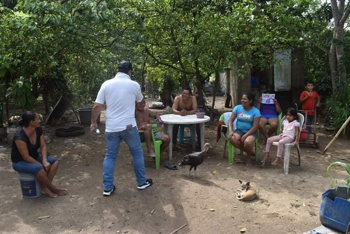
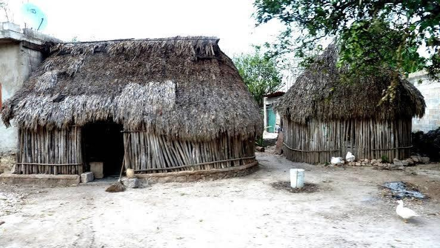

Ranchoapan
- Habitantes: 450
- Escuelas: Kinder: 1, Primaria: 1, Secundaria: 0, Bachillerato: 0, Universidades: 0
- Distancia a Jáltipan: 4 km

Mixtán
- Habitantes: 320
- Escuelas: Kinder: 1, Primaria: 1, Secundaria: 0, Bachillerato: 0, Universidades: 0
- Distancia a Jáltipan: 6 km

San Soles
- Habitantes: 172
- Escuelas: Kinder: 1, Primaria: 1, Secundaria: 0, Bachillerato: 0, Universidades: 0
- Distancia a Jáltipan: 9 km

Lomas de Tacamichapan
- Habitantes: 380
- Escuelas: Kinder: 1, Primaria: 1, Secundaria: 1, Bachillerato: 0, Universidades: 1
- Distancia a Jáltipan: 15 km

Galeras
- Habitantes: 300
- Escuelas: Kinder: 1, Primaria: 1, Secundaria: 0, Bachillerato: 0, Universidades: 0
- Distancia a Jáltipan: 7 km

La Lajilla
- Habitantes: 210
- Escuelas: Kinder: 1, Primaria: 1, Secundaria: 0, Bachillerato: 0, Universidades: 0
- Distancia a Jáltipan: 11 km

Ixpuchapan
- Habitantes: 160
- Escuelas: Kinder: 1, Primaria: 1, Secundaria: 0, Bachillerato: 0, Universidades: 0
- Distancia a Jáltipan: 12 km

Yancuigapan
- Habitantes: 290
- Escuelas: Kinder: 1, Primaria: 1, Secundaria: 0, Bachillerato: 0, Universidades: 0
- Distancia a Jáltipan: 10 km

Buena Vista
- Habitantes: 230
- Escuelas: Kinder: 1, Primaria: 1, Secundaria: 0, Bachillerato: 0, Universidades: 0
- Distancia a Jáltipan: 8 km

Malota
- Habitantes: 275
- Escuelas: Kinder: 1, Primaria: 1, Secundaria: 0, Bachillerato: 0, Universidades: 0
- Distancia a Jáltipan: 13 km